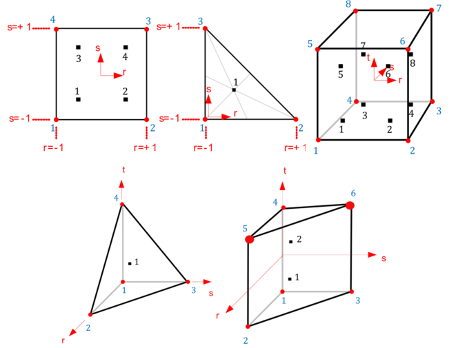

Solid 요소
솔리드 요소는 평면변형, 평면응력, 축대칭, 3차원 요소 등과 같이 응력조건에 따라 구분되며, 연결절점과 정식화 방식 등에 따라 구분할 수 있다. 현재 지원하는 요소는 다음과 같다.
- CPS3 : 평면응력 3절점 요소(Triangle), 표준 정식화
- CPS4 : 평면응력 4절점 요소(Quadrangle), 표준 정식화
- CPE3 : 평면변형 3절점 요소(Triangle), 표준 정식화
- CPE4 : 평면변형 4절점 요소(Quadrangle), 표준 정식화
- CAX3 : 축대칭 3절점 요소(Triangle), 표준 정식화
- CAX4 : 축대칭 4절점 요소(Quadrangle), 표준 정식화
- C3D4 : 3차원 4절점 요소(Tetrahedron), 표준정식화
- C3D6 : 3차원 6절점 요소(Prism), 표준정시고하
- C3D8 : 3차원 8절점 요소(Hexahedron), 표준 정식화
- C3D8I : 3차원 8절점 요소(Hexahedron), Incompatible mode 정식화
- CPE4PMDL : 평면변형 4절점 PMDL 요소.
- CAX4PMDL : 축대칭 4절점 PMDL 요소.
- C3D8PMDL : 3차원 8절점 PMDL 요소.
솔리드 요소는 모두 Solid 단면 타입을 통해 단면 성질을 지정한다. 다음은 절점 번호와 적분점 번호이다.

Fig. 4.6-1. 솔리드 요소의 절점 번호 및 적분점 번호
C3D8PMDL 등과 같이 PMDL 요소는 *Section, TYPE=Solid에서 어떤 정식화(PMDL 또는 SimplePMDL)을 사용할지, 어떤 방향으로 파진행방향을 적용할지 지정해야 한다. SimplePMDL의 경우 midpoint integrated element formulation을 사용한다. 이 방법은 는 표준 유한요소 정식화에서 가우스 적분점을 주어진 방향으로 중앙점에서만 사용하여 파전파 해석시 무한영역을 경제적으로 해석하는 용도로 사용된다.
- CPE4PMDL, CAX4PMDL에서 R 방향 지정: 강성행렬 계산시 1x2, 질량행렬 계산시 1x3
- CPE4PMDL, CAX4PMDL에서 S 방향 지정: 강성행렬 계산시 2x1, 질량행렬 계산시 3x1
- CPE4PMDL, CAX4PMDL에서 RS 방향 지정: 강성행렬 계산시 1x1, 질량행렬 계산시 1x1
- C3D8PMDL에 R방향 지정 : 강성행렬 계산시 1x2x2, 질량행렬 계산시 1x3x3
- C3D8PMDL에 S방향 지정 : 강성행렬 계산시 2x1x2, 질량행렬 계산시 3x1x3
- C3D8PMDL에 T방향 지정 : 강성행렬 계산시 2x2x1, 질량행렬 계산시 3x3x1
- C3D8PMDL에 RS방향 지정 : 강성행렬 계산시 1x1x2, 질량행렬 계산시 1x1x3
- C3D8PMDL에 TR방향 지정 : 강성행렬 계산시 1x2x1, 질량행렬 계산시 1x3x1
- C3D8PMDL에 ST방향 지정 : 강성행렬 계산시 2x1x1, 질량행렬 계산시 3x1x1
- C3D8PMDL에 RST방향 지정 : 강성행렬 계산시 1x1x1, 질량행렬 계산시 1x1x1
Example
*Material, Type=IsoElasticity, Name=steel
2E6, 0.2
*Section, Type=Solid, Name=plsec, Mass=Lumped
steel, 0.1
*Element, Type=C3D8
1, 1,2,3,4,5,6,7,8, S=plsec
*Element, TYPE=CPE3
*Element, Type=CPE3, ELSet=elset
id, n1, n2, n3{, S=section}
...
Specifications
- No. of nodes: 3
- No. of integration pts.: 1
- Fields: Material model at each Gauss points
- Compatible section: SolidSection
- Active DOFs: X, Y
*Element, TYPE=CPS3
*Element, Type=CPS4, ELSet=elset
id, n1, n2, n3{, S=section}
...
Specifications
- No. of nodes : 3
- No. of integration pts. : 1
- Fields : Material model at each Gauss points
- Compatible section : SolidSection
- Active DOFs : X, Y
*Element, TYPE=CAX3
*Element, Type=CAX4, ELSet=elset
id, n1, n2, n3{, S=section}
...
Specifications
- No. of nodes : 3
- No. of integration pts. : 1
- Fields : Material model at each Gauss points
- Compatible section : SolidSection
- Active DOFs : X, Y
*Element, TYPE=CPE4
*Element, Type=CPE4, ELSet=elset
id n1 n2 n3 n4{, S=section}
...
Specifications
- No. of nodes: 4
- No. of integration pts.: 2-by-2
- Fields: Material model at each Gauss points
- Compatible section: SolidSection
- Active DOFs: X, Y
*Element, TYPE=CPS4
*Element, Type=CPS4, ELSet=elset
id n1 n2 n3 n4 {, S=section}
...
Specifications
- No. of nodes : 4
- No. of integration pts. : 2-by-2
- Fields : Material model at each Gauss points
- Compatible section : SolidSection
- Active DOFs : X, Y
*Element, TYPE=CAX4
*Element, Type=CAX4, ELSet=elset
id n1 n2 n3 n4 {, S=section}
...
Specifications
- No. of nodes : 4
- No. of integration pts. : 2-by-2
- Fields : Material model at each Gauss points
- Compatible section : SolidSection
- Active DOFs : X, Y
*Element, TYPE=C3D4
*Element, Type=C3D4, ELSet=elset
id n1 n2 n3 n4 {, S=section}
...
Specifications
- No. of nodes : 4
- No. of integration pts. : 1
- Fields : Material model at each Gauss points
- Compatible section : SolidSection
- Active DOFs : X, Y, Z
*Element, TYPE=C3D6
*Element, Type=C3D6, ELSet=elset
id n1 n2 n3 n4 n5 n6 {, S=section}
...
Specifications
- No. of nodes : 6
- No. of integration pts. : 2
- Fields : Material model at each Gauss points
- Compatible section : SolidSection
- Active DOFs : X, Y, Z
*Element, TYPE=C3D8
*Element, Type=C3D8, ELSet=elset
id n1 n2 n3 n4 n5 n6 n7 n8{, S=section}
...
Specifications
- No. of nodes : 8
- No. of integration pts. : 2-by-2-by-2
- Fields : Material model at each Gauss points
- Compatible section : SolidSection
- Active DOFs : X, Y, Z
*Element, TYPE=C3D8I
*Element, Type=C3D8I, ELSet=elset
id n1 n2 n3 n4 n5 n6 n7 n8{, S=section}
...
Specifications
- No. of nodes : 8
- No. of integration pts. : 2-by-2-by-2
- Fields : Material model at each Gauss points
- Compatible section : SolidSection
- Active DOFs : X, Y, Z
*Element, TYPE=CPE4PMDL
*Element, Type=CPE4PMDL, ELSet=elset
id n1 n2 n3 n4{, S=section}
...
Specifications
- No. of nodes: 4
- No. of integration pts.: formulation depependent*
- Fields: Material model at each Gauss points
- Compatible section: SolidSection
- Active DOFs: X, Y
2-by-2 integration is used for PMDL formuation, but 1-by-2 or 2-by-1 integration is used for SimplePMDL formuation
*Element, TYPE=CAX4PMDL
*Element, Type=CAX4PMDL, ELSet=elset
id n1 n2 n3 n4 {, S=section}
...
Specifications
- No. of nodes : 4
- No. of integration pts.: formulation depependent*
- Fields : Material model at each Gauss points
- Compatible section : SolidSection
- Active DOFs : X, Y
2-by-2 integration is used for PMDL formuation, but 1-by-2 or 2-by-1 integration is used for SimplePMDL formuation
*Element, TYPE=C3D8PMDL
*Element, Type=C3D8PMDL, ELSet=elset
id n1 n2 n3 n4 n5 n6 n7 n8{, S=section}
...
Specifications
- No. of nodes : 8
- No. of integration pts.: formulation depependent*
- Fields : Material model at each Gauss points
- Compatible section : SolidSection
- Active DOFs : X, Y, Z
2-by-2-by-2 integration is used for PMDL formuation, but 1-by-2-by-2, 2-by-1-by-2, or 2-by-2-by-1 integration is used for SimplePMDL formuation
*Section, TYPE=Solid
솔리드 요소 단면을 정의
*Section, Type=Solid, Name=name, Mass={Consistent|Lumped}
mat, thickness
formulation, direction
Keyword line
- Name=name: 단면 이름(required). 단면 이름은 중복될 수 없음
- Mass={Consistent|Lumped}: Consistent or Lumped, which means consistent mass or lumped mass, respectively. (Optional, default Consistent)
First dataline
- material: Material (required)
- thickness: Thickness (optoinal), default 1. Only used in plane stress or plane strain elements
Second dataline (optional, used only for PMDL element)
- formulation: PMDL or SimplePMDL
- direction: R, S, T, RS, RT, TR, RST
두 번째 라인은 PMDL 요소인 CPE4PMDL, CAX4PMDL, C3D8PMDL, AC2D4PMDL, AC3D8PMDL 등에서 사용된다. PMDL 요소군의 정식화로는 PMDL과 SimplePMDL을 지정할 수 있는데, SimplePMDL는 주어진 방향으로 중앙점에서 적분하는 Mid-Point Integrated Element Formuation을 의미한다. SimplePMDL를 사용하는 경우 ViscousBoundary등과 조합해야 사용해야 파전파가 소산되는 효과를 얻을 수 있다.